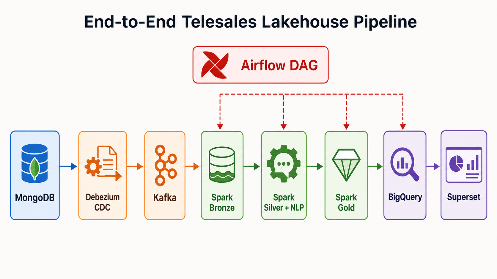

Hướng Dẫn Demo End-to-End Hệ Thống
Mục tiêu demo là chứng minh dữ liệu đi trọn luồng từ hệ thống nguồn đến dashboard: MongoDB, Debezium, Kafka, Spark Lakehouse, BigQuery và Superset.

1. Câu Nói Mở Đầu
Hệ thống của em xây dựng một Hybrid Data Lakehouse cho bài toán phân tích telesales. Dữ liệu nguồn nằm trong MongoDB, Debezium bắt thay đổi bằng CDC và đưa vào Kafka. Spark xử lý dữ liệu qua các lớp Bronze, Silver và Gold trên Lakehouse/Iceberg. Sau đó Gold được đồng bộ sang BigQuery và Superset dùng BigQuery để hiển thị dashboard BI.
Ở lớp Silver, hệ thống làm sạch dữ liệu, deduplicate và áp dụng mô hình NLP Bag-of-Words
để sinh call_code từ transcript. Transcript và PII không được đưa lên dashboard serving.
2. Checklist Trước Khi Demo
| Cần kiểm tra | Lệnh hoặc màn hình | Kết quả mong đợi |
|---|---|---|
| Docker Desktop | Mở Docker Desktop | Engine đang chạy |
| Google Cloud auth | gcloud.cmd auth list |
Có tài khoản active |
| BigQuery project | gcloud.cmd config set project project-ef0c6db5-0765-4391-845 |
Đúng project đồ án |
| ADC credentials | gcloud.cmd auth application-default login |
Airflow và Superset đọc được BigQuery |
| Docker stack | docker compose -f ".\project\docker-compose.yml" ps -a |
Service chính Up, init job Exited (0) |
3. Các Bước Demo
| Bước | Cần show | Nói ngắn gọn |
|---|---|---|
| 1. Start stack | docker compose -f ".\project\docker-compose.yml" up -d --build |
Em khởi động toàn bộ các tầng bằng Docker Compose. |
| 2. Kiểm tra container | docker compose -f ".\project\docker-compose.yml" ps -a |
Các service chính như MongoDB, Kafka, Debezium, Spark, Airflow và Superset đang chạy. |
| 3. Source MongoDB | Container mongodb, init job mongo-data-init |
MongoDB là hệ thống nguồn chứa customer, offer và call logs. |
| 4. Debezium CDC | docker exec debezium_connect curl -fsS http://localhost:8083/connectors/mongo-source/status |
Debezium bắt thay đổi từ MongoDB và tạo event CDC. |
| 5. Kafka | docker exec kafka kafka-topics --bootstrap-server kafka:29092 --list |
Kafka lưu các event CDC để Spark đọc vào Lakehouse. |
| 6. Airflow DAG | Mở http://localhost:8081, login admin/admin, trigger telesales_lakehouse_pipeline |
Airflow điều phối toàn bộ pipeline từ Bronze đến BigQuery. |
| 7. Bronze | Task *.bronze màu xanh |
Bronze lưu raw CDC event, giữ lineage từ nguồn. |
| 8. Silver | Task *.silver màu xanh |
Silver làm sạch, deduplicate, masking/drop PII và sinh call_code bằng NLP. |
| 9. Gold | Task group primary_telesales.gold màu xanh |
Gold xây Star Schema gồm fact và dimension phục vụ BI. |
| 10. CallCenterEN | Task group callcenteren_external màu xanh |
Nhánh này chứng minh hệ thống mở rộng được sang nguồn hội thoại bên ngoài. |
| 11. BigQuery sync | Task bq_sync_gold màu xanh |
Gold được publish sang BigQuery làm serving layer. |
| 12. Serving view | Chạy file SQL project\bigquery\create_serving_views.sql |
View này join sẵn dữ liệu để BI truy vấn dễ hơn. |
| 13. Superset | Mở http://localhost:8088, login admin/admin, dashboard Telesales BigQuery Dashboard |
Superset hiển thị KPI, outcome, xu hướng cuộc gọi và hiệu suất agent. |
4. Vai Trò Của Từng Step Trong Đồ Án Và Báo Cáo
| Bước | Vai trò trong hệ thống | Làm gì trong đồ án | Đối chiếu với báo cáo |
|---|---|---|---|
| 1. Start stack | Khởi động môi trường thực nghiệm | Tạo đầy đủ các service cần để chạy pipeline local | Chương 3: kiến trúc triển khai; Chương 4: môi trường kiểm thử |
| 2. Kiểm tra container | Chứng minh hệ thống sẵn sàng | Xác nhận MongoDB, Kafka, Debezium, MinIO, Spark, Airflow, Superset đã chạy | Chương 4: kiểm thử vận hành hệ thống |
| 3. Source MongoDB | Tầng dữ liệu nguồn operational | Lưu customer, offer và call logs trước khi CDC | Chương 2: mô tả dữ liệu; Chương 3: tầng source database |
| 4. Debezium CDC | Tầng thu nhận thay đổi | Bắt thay đổi từ MongoDB và tạo CDC event | Chương 1: lý thuyết CDC/Debezium; Chương 3: thiết kế ingestion |
| 5. Kafka | Tầng streaming trung gian | Lưu event CDC để Spark đọc theo luồng | Chương 1: Apache Kafka; Chương 3: streaming layer |
| 6. Airflow DAG | Tầng điều phối pipeline | Sắp xếp thứ tự Bronze, Silver, Gold, CallCenterEN và BigQuery sync | Chương 1: Airflow; Chương 3: orchestration; Chương 4: kiểm thử DAG |
| 7. Bronze | Lớp raw trong Lakehouse | Ghi raw CDC event, giữ lineage và khả năng tái xử lý | Chương 1: Medallion/Lakehouse; Chương 3: thiết kế Bronze; Chương 4: kết quả ETL |
| 8. Silver | Lớp dữ liệu sạch | Deduplicate, chuẩn hóa schema, masking/drop PII, sinh call_code bằng BoW |
Chương 2: xử lý dữ liệu/mô hình; Chương 3: thiết kế Silver; Chương 4: thực nghiệm NLP |
| 9. Gold | Lớp phân tích | Xây Star Schema gồm fact và dimension cho BI | Chương 1: Star Schema/BI; Chương 3: thiết kế Gold; Chương 4: row count Gold |
| 10. CallCenterEN | Nhánh dữ liệu thứ hai | Xử lý CallCenterEN như một nhánh tương đương với AGI Telesales | Chương 2: hai nhánh dữ liệu; Chương 3: multi-source architecture; Chương 4: kiểm thử CallCenterEN |
| 11. BigQuery sync | Tầng serving bên ngoài | Publish Gold tables sang BigQuery để BI truy vấn | Chương 1: BigQuery; Chương 3: serving layer; Chương 4: BigQuery verification |
| 12. Serving view | Lớp semantic cho BI | Tạo view join sẵn, giảm độ phức tạp cho dashboard | Chương 3: thiết kế serving/BI; Chương 4: kiểm thử serving view |
| 13. Superset | Tầng trực quan hóa | Hiển thị KPI, outcome, xu hướng và hiệu suất agent | Chương 1: Superset; Chương 3: BI layer; Chương 4: dashboard validation |
5. Lệnh Dùng Khi Demo
docker compose -f ".\project\docker-compose.yml" up -d --build docker compose -f ".\project\docker-compose.yml" ps -a
docker exec debezium_connect curl -fsS http://localhost:8083/connectors/mongo-source/status docker exec kafka kafka-topics --bootstrap-server kafka:29092 --list
docker exec airflow airflow dags trigger telesales_lakehouse_pipeline docker exec airflow airflow dags list-runs -d telesales_lakehouse_pipeline
Get-Content -Raw ".\project\bigquery\create_serving_views.sql" | bq.cmd query --use_legacy_sql=false
6. Row Count Mong Đợi
| Object | Rows |
|---|---|
dim_customer |
4,344 |
dim_offer |
5,072 |
dim_date |
2 |
fact_telesales_calls |
23,447 |
vw_telesales_performance |
23,447 |
7. Điểm Cần Nhấn Mạnh Trên Superset
Total Calls
Quy mô dữ liệu đã xử lý qua toàn bộ pipeline.
Successful Sales
Số cuộc gọi có kết quả bán hàng thành công.
Success Rate
Metric chính để đánh giá hiệu quả telesales.
Calls by Date
Xu hướng cuộc gọi theo ngày.
Outcome Breakdown
Phân bố kết quả cuộc gọi theo nhóm outcome.
Agent Performance
So sánh hiệu suất agent theo calls, sales, success rate và talk time.
vw_telesales_performance.
Để chứng minh thêm CallCenterEN, mở BigQuery và show các view:
vw_callcenteren_labeled, vw_callcenteren_performance,
vw_callcenteren_call_codes.
8. Câu Kết Demo
Qua demo này, em chứng minh hệ thống đã chạy end-to-end: từ MongoDB, qua Debezium CDC và Kafka, xử lý Lakehouse bằng Spark theo Bronze/Silver/Gold, đồng bộ sang BigQuery và hiển thị trên Superset. Hệ thống đảm bảo được data lineage, khả năng tái xử lý, NLP enrichment và kiểm soát PII trước khi đưa dữ liệu lên BI.